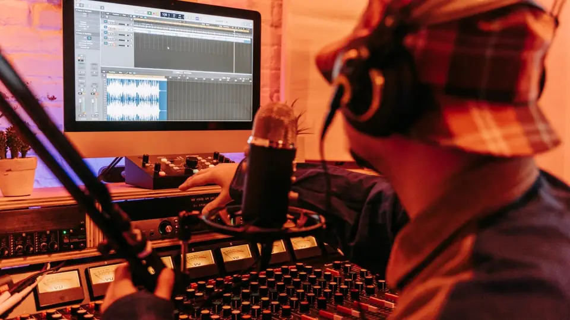

YouTube Music starts labeling AI-made songs — and Auto-Tune doesn't count
YouTube is bringing its AI-disclosure habit to music: the company announced Wednesday that YouTube Music will tag tracks created “primarily using generative AI” right on the player page, with a tap-to-expand explanation of what the model actually did. The labels will also expand to the main YouTube app — and YouTube says its own detection tools can apply them even when nobody disclosed anything.
- Announced Wednesday, October 14, 2026: labels appear on the player page with a tap-to-expand explanation of what the model did, and expand to the main YouTube app.
- Partners declare use via DDEX or CSV templates, choosing Fully Gen AI, Partly Gen AI, or No Gen AI.
- Fully Gen AI covers a track downloaded from an AI music generator after a text prompt — composition and vocals made by the model.
- Partly Gen AI is the murky middle: an AI-generated bassline or strings under live vocals still qualifies — and a song with 100% human-performed audio counts if its music video was made with a text-to-video model.
- No Gen AI is the carve-out: Auto-Tune fixing minor vocal mistakes and automated AI mastering (balance, compression, EQ) need no label — the line is whether AI generated the creative substance.
- YouTube will use “additional signals to augment partner declarations” and may designate content as fully or partly Gen AI where partners provide no information at all.
- Neither the blog post nor the help page says whether labeled tracks will be recommended or paid differently; the May AI-video-labels update said a disclosure label alone does not change recommendation or monetization eligibility.
Three labels, one bright line
Partners declare generative AI use when they deliver tracks to YouTube via DDEX or CSV templates, choosing from three designations. “Fully Gen AI” covers the obvious case: a track downloaded from an AI music generator after a text prompt — composition and vocals made by the model, as Music Business Worldwide reports. “Partly Gen AI” is the murky middle: an artist who generates a bassline or string section with AI, then adds live vocals and instruments on top. YouTube’s own examples stretch the category further — a song with 100% human-performed audio still qualifies as “Partly Gen AI” if its music video was made with a text-to-video model.
“No Gen AI” is the carve-out: pitch-correction software like Auto-Tune fixing minor vocal mistakes, and automated AI mastering that sets the final balance, compression and EQ, both land in the no-label bucket, per YouTube’s help page. The line isn’t whether AI touched the track — it’s whether AI generated the creative substance.

The detection net
The system leans on partner disclosures, but YouTube isn’t taking everyone’s word for it. It says it will use “additional signals to augment partner declarations” — its own detection tools — and where partners provide no Gen AI information at all, YouTube will rely solely on those signals and “may designate content as fully or partly Gen AI.” Disclosure is encouraged; the platform can label you anyway.
One thing YouTube didn’t say: whether the “Partly Gen AI” tier gets the player-page label at all. The announcement promises the label for tracks where AI played a “significant role,” but the help-center examples suggest the partly tier is a delivery-time declaration that may or may not surface to listeners, TechCrunch notes.
Transparency, not treatment
Crucially, neither the blog post nor the help page says what happens to labeled tracks — no word on whether they’ll be recommended differently or paid differently. The post does link back to YouTube’s May update on AI video labels, where the company said plainly that “a disclosure label alone does not change how a video is recommended or whether it’s eligible to earn money.”
That’s a gentler stance than some rivals are taking. TIDAL began tagging fully AI-generated music in June and went further, stopping royalty payments on it. Spotify has been testing AI disclosures in song credits since April and in August added an “AI Persona” badge for AI-generated artist identities, keeping such music out of editorial and algorithmic recommendations by default. Apple Music told industry partners in August that “Made With AI” tags would reach listeners later this year. And Deezer — which says it receives nearly 90,000 fully AI-generated tracks every day — announced Tuesday it will let users exclude fully AI-generated music from search results.
Why it matters
The scale is the story. Tens of thousands of fully AI-generated tracks are flooding streaming services daily, and the industry spent the summer groping for a labeling vocabulary — the RIAA and IFPI even proposed two voluntary labels in July, “AI-generated” and “AI-assisted.” YouTube, the world’s biggest music platform, has now picked its side: label loudly, but keep the songs earning. As the company put it, “our listeners have told us they want transparency when they’re hearing an AI-generated track.” The label tells you a song was made with AI; it doesn’t judge it, throttle it, or starve it. Whether listeners change their behavior when they can see the tag is the experiment everyone will be watching.
Frequently asked questions
How will AI-made songs be labeled on YouTube Music?
Tracks created primarily using generative AI get a label on the player page with a tap-to-expand explanation of what the model actually did; the labels also expand to the main YouTube app.
What is the difference between Fully Gen AI, Partly Gen AI and No Gen AI?
Fully Gen AI is a track made by a generator from a text prompt; Partly Gen AI covers AI-assisted tracks like an AI-generated bassline under live vocals — even a fully human-performed song qualifies if its video was AI-generated; No Gen AI covers pitch correction like Auto-Tune and automated AI mastering, which need no label.
Can YouTube label a track if the uploader never disclosed AI use?
Yes. YouTube says it will use its own detection tools to augment partner declarations and may designate content as fully or partly Gen AI where partners provide no Gen AI information at all.